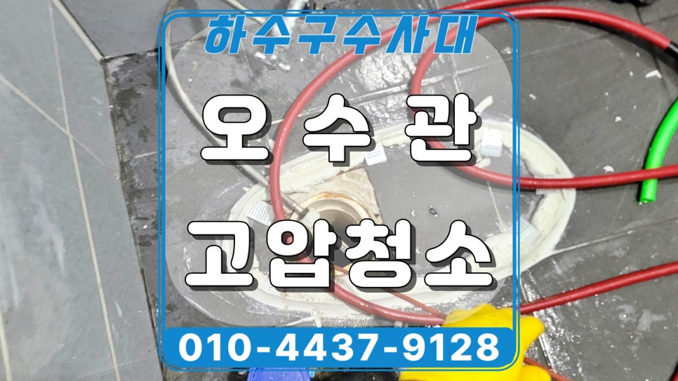
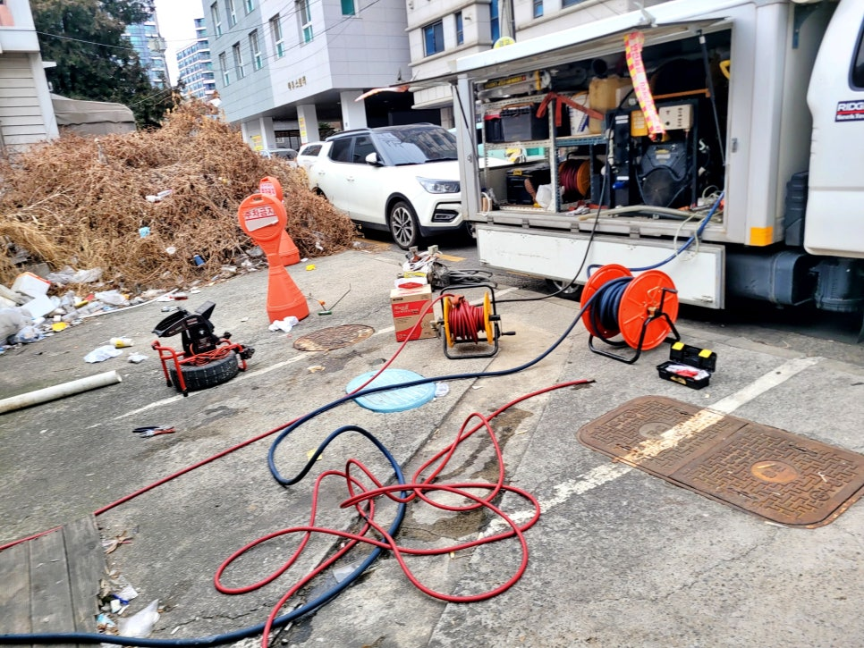
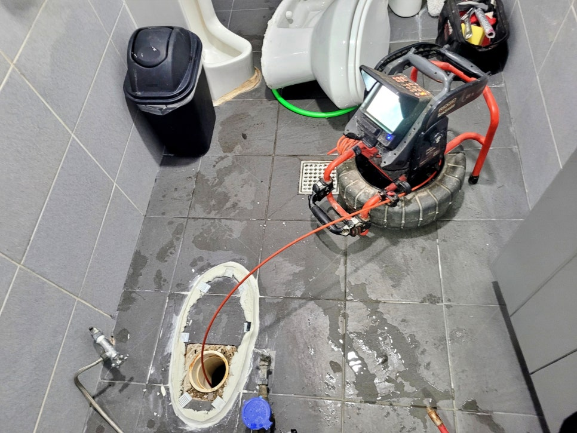
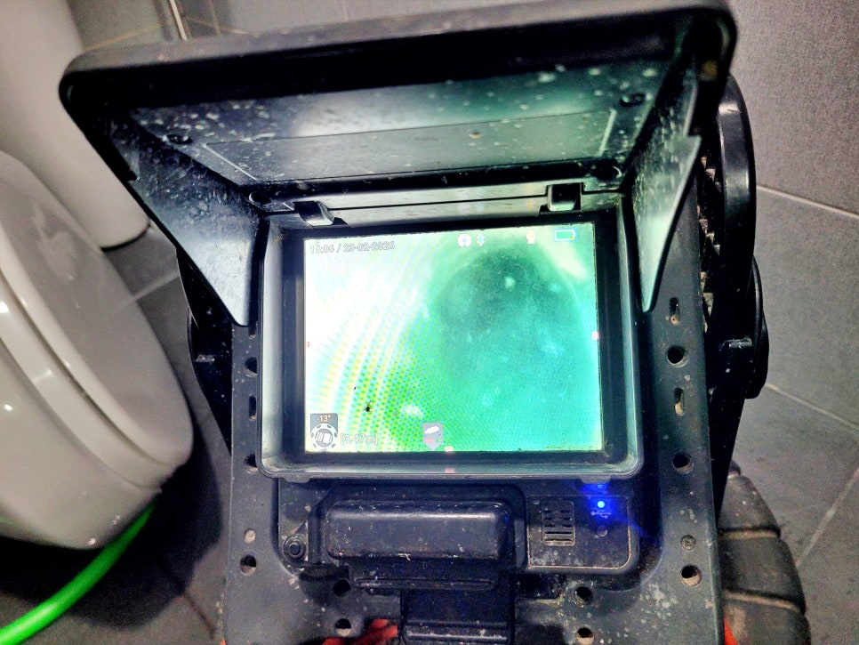
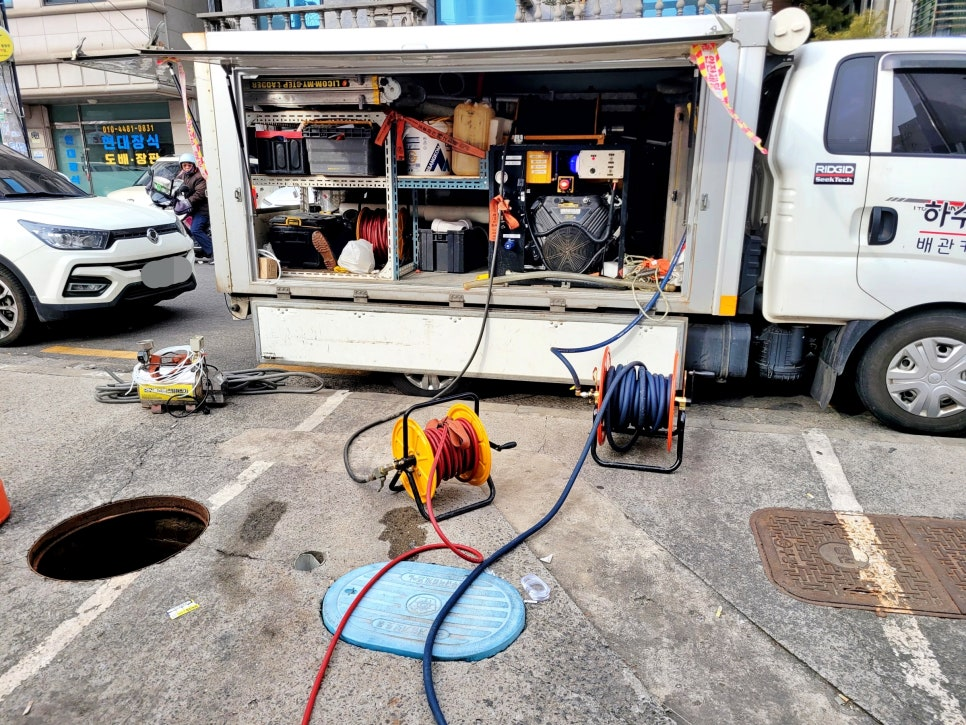
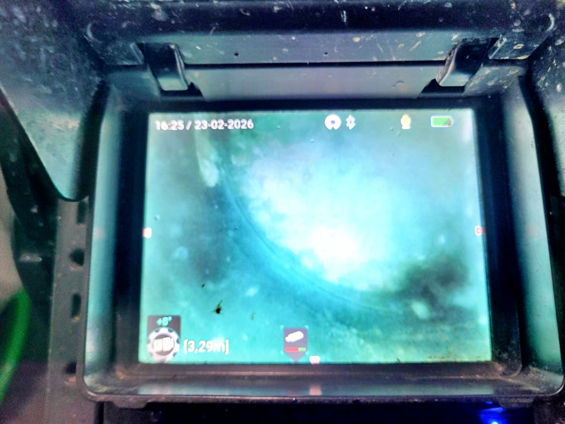
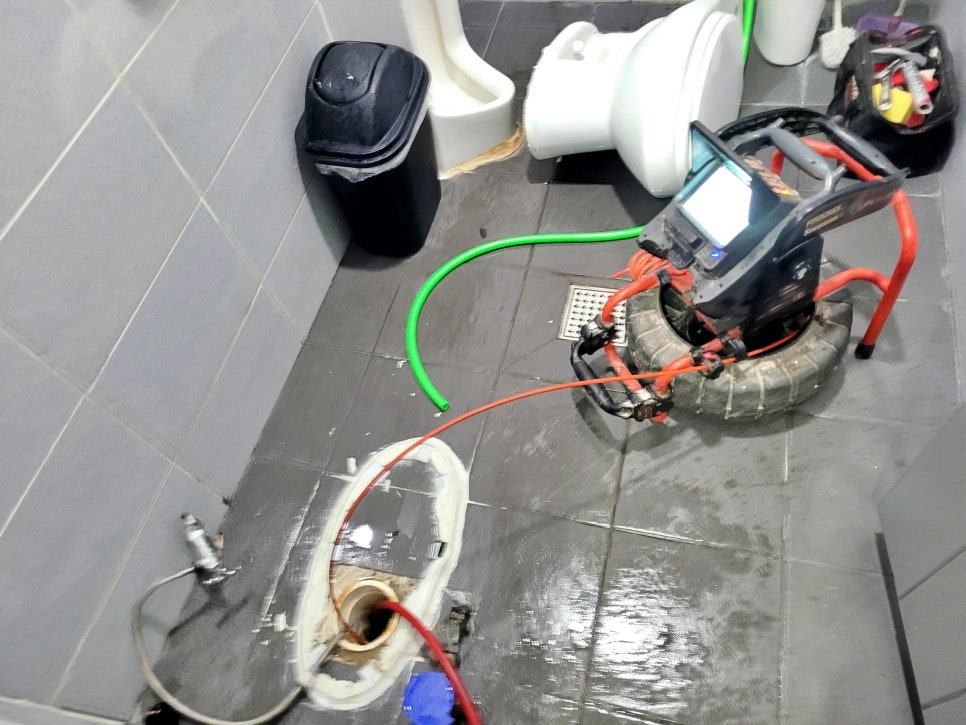

🏠 오산 궐동 화장실 변기막힘, 공용 오수관 고압세척 해결
오산 변기막힘 전문 시공 후기

📋 작업 개요
- 위치: 오산
- 서비스 유형: 변기막힘, 하수구막힘, 배관막힘, 맨홀막힘, 역류해결, 뚫는업체, 배관청소, 고압세척
- 작업 일시: 2026. 3. 23. 15:58
- 업체명: 하수구수사대 (010-5615-2118)
🔍 문제 상황
오산시 궐동 상가 화장실 변기막힘,
공용 오수관 막힘 고압세척 청소로
뚫어드렸어요.
안녕하세요?
오산시 궐동 화장실 변기막힘
공용 오수관막힘 청소전문업체
하수구수사대 인사드립니다.
오늘 소개드릴 현장은
오산 궐동 상가 공용 화장실에서
변기막힘으로 배수가 원활하지
않고 휴지를 조금만 사용해도
역류가 반복되는 곳이었는데요.
오산 궐동 공용 오수관 고압세척 장면
얼마 전에도 동네 하수구업체에서
변기를 탈거하지 않은 채 일반적인
관통 작업을 진행하고 갔지만
현상은 그대로 이어지고 있었습니다.
오산 궐동 화장실 변기막힘 현장
관계자분께서는 단순 통수보다
오수관 내부를 정확히 살펴보고

🔎 원인 분석
💡 전문가 진단: 오산시 궐동 상가 화장실 변기막힘,공용 오수관 막힘 고압세척 청소로뚫어드렸어요.
근본적인 원인까지 해결하고 싶어
하수구수사대를 찾아주셨는데요.
이번 현장은 왜 이러한 문제가
반복되었는지 그 원인을 자세히
설명드리겠습니다.
오산 궐동 화장실 변기막힘 원인은?
현장 도착 후 바로 변기를 탈거하고
내시경 카메라를 투입해 오수관 내부
상태를 꼼꼼히 살펴봤는데요.
그 결과 공용 오수관 내부에 물티슈와
각종 오물이 쌓이면서 내부 통로를
틀어막고 있는 상태가 드러났습니다.
오산 궐동 상가 공용 화장실 변기막힘
현장은 걸으로 보이는 입구 주변만
임시로 뚫어 놓은 상태라 잠깐은
배수가 되는 듯 보여도 얼마가지 못해
다시 막힐 수 밖에 없는 구조였는데요.
공용 오수관 고압세척 작업
오수관 내부 상태를 관계자분들께
자세히 설명들린 뒤, 오수 맨홀까지

🔧 작업 과정
연결되는 구간을 따라 고압세척 청소
작업에 들어갔습니다.
공용 화장실 변기막힘 고압세척 장면
먼저 건물 방향으로 1차 고압세척을
진행하고 다시 공용화장실 쪽에서
오수 맨홀 방향으로 뚫는 방식으로
물티슈와 각종 오물을 제거했는데요.
오산 궐동 변기막힘 고압세척 후에도
잔여 이물질이 남지 않도록 2차, 3차
청소 작업을 이어가며 공용 오수관
전체 통로를 확보해 나갔습니다.
고압세척을 마친 뒤에는 내시경으로
오수관 내부를 다시 점검해 막혀 있던
구간이 깨끗하게 뚫린 모습을 볼 수
있었는데요.
오산 궐동 화장실 변기막힘 작업 후
관계자분들께 깨끗하게 청소된 곳을
내시경 화면으로 직접 보여드리고,
마지막으로 배수 테스트를 진행해
변기에서 사용한 휴지가 막힘 없이
시원하게 내려가는 모습을 모두가
확인할 수 있었습니다.
오늘의 포스팅을 마무리하며
오늘 소개한
오산 상가 공용화장실 변기막힘 원인은
그동안 하수관 내부에 쌓인 물티슈와
오물을 제거하지 않은 채, 보이는 곳만
뚫어 같은 문제가 반복된 것이고요.
오산시 하수구 청소업체인 저희
하수구수사대가 근본적인 원인을
고압세척으로 깨끗하게 뚫어드리고
청소해 해결해 드린 사례입니다.


✅ 작업 완료
지금 혹시 공용 화장실에서 막힘이나
역류 현상이 자주 반복되신다면 배관
고압세척 전문 하수구수사대를 바로
불러 주십시오.
지금까지
"오산 궐동 화장실 변기막힘 고압세척"
후기를 정독해 주셔서 감사합니다.
#오산궐동화장실변기막힘 #오산궐동공용화장실변기막힘 #오산궐동상가변기막힘 #오산궐동하수구업체 #오산궐동공용오수관막힘 #오산궐동오수관청소업체 #오산고압세척업체 #오산시하수구청소전문 #오산변기잘뚫는업체




⚠️ 하수구 배관 막힘 예방 및 관리 가이드
- ✅ 머리카락, 비닐, 물티슈 등 물에 분해되지 않는 이물질은 하수구 유입을 절대 금지해 주세요.
- ✅ 하수구 거름망을 씌우고 모여진 이물질은 주기적으로 쓰레기통에 바로 비워주셔야 합니다.
- ✅ 배관 노후가 심할 경우 이물질이 더 쉽게 걸리므로 주기적인 배관 세척(고압세척 등)을 권장합니다.
- ✅ 작업 후 1년 이내 재발 시 하수구수사대에서 무상 A/S 보증 서비스를 제공합니다.
💡 핵심 정리
- 확실한 장비 작업(내시경 점검 및 샤프트 스케일링)으로 원인을 뿌리 뽑습니다.
- 작업 후 1년 이내에 동일한 부위 재발 시 100% 무상 A/S 서비스를 보장합니다.
- 서울 · 경기 · 인천 전 지역에 24시간 언제든 긴급 출동할 수 있도록 항시 대기 중입니다.
❓ 자주 묻는 질문 (FAQ)
🚨 오산 변기막힘 문제로 고민이신가요?
정확한 원인 진단과 확실한 시공으로 재발 없는 해결을 약속드립니다.
24시간 긴급 출동 | 서울 · 경기 · 인천 전지역 | 1년 내 재발 시 무상 A/S